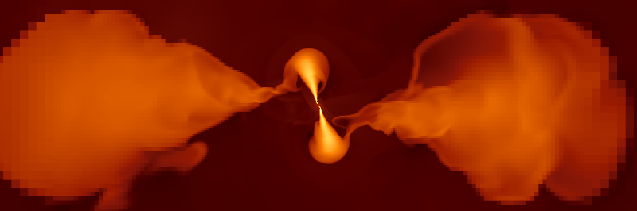
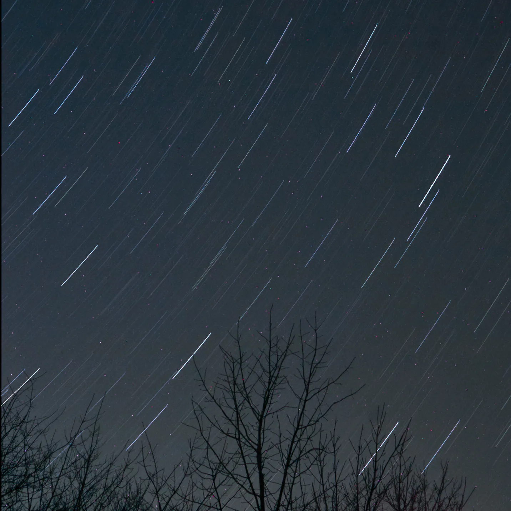
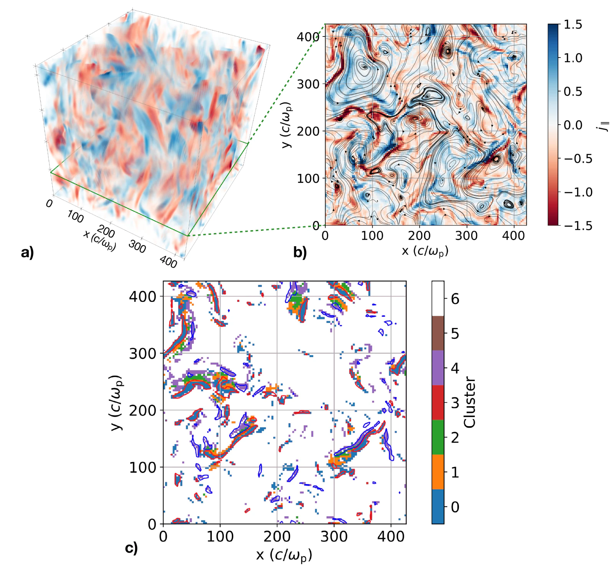
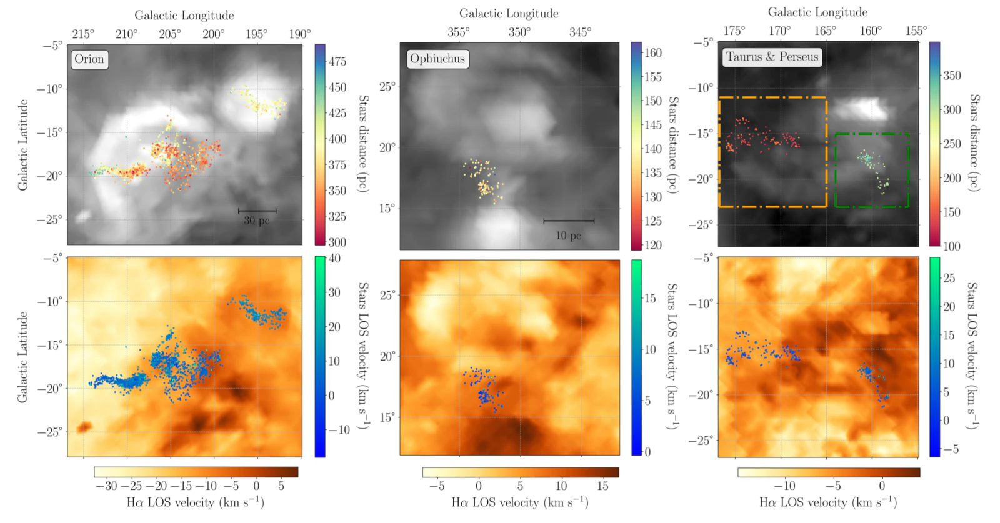

Black-hole accretion
Nested zoom-in simulations of multiphase gas and jet feedback around supermassive black holes.

Computational astrophysicist
I study turbulent processes in the universe, including black-hole accretion, reconnection in magnetized plasma, and the motion of young stars. My work combines numerical simulations, machine learning, and data analysis to further our understanding of how the universe works.

Nested zoom-in simulations of multiphase gas and jet feedback around supermassive black holes.

Open-source software for identifying current sheets in turbulent magnetized plasma.

Using young stars and gas to measure turbulence in nearby star-forming regions.
I grew up in Ho Chi Minh City, Vietnam, and moved to the United States during high school. Outside of research, I enjoy learning about computer hardware, playing chess, watching soccer (I am a lifelong Arsenal fan), traveling, and taking photographs, including the ones you see on this site.